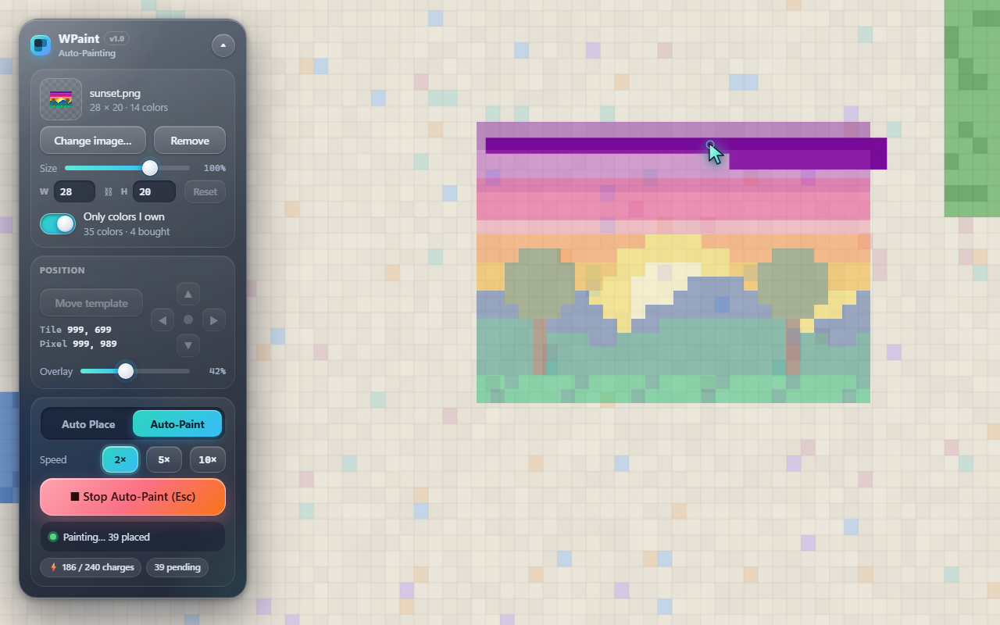
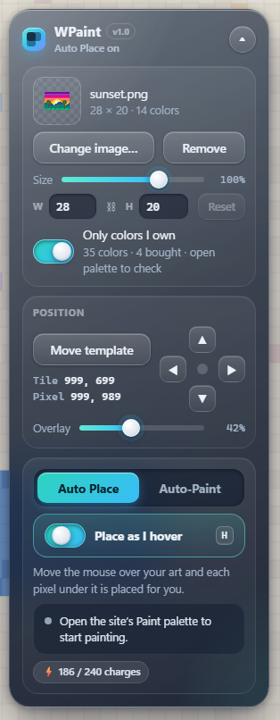
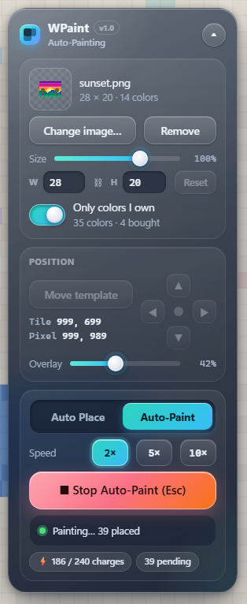

WPaint: template overlay and auto painter for WPlace
Turn any image into WPlace pixel art. WPaint shows your template on the wplace.live map and places the matching palette color as you move the cursor, or paints the visible area for you with Auto-Paint.

Features
Everything needed to recreate an image on the WPlace canvas, in a single compact panel.
Template overlay
Load a PNG or JPEG, convert it to the WPlace palette, and display it over the map at any opacity.
Auto Place
With the Paint palette open, each pixel under the cursor receives the correct color. No clicking required.
Auto-Paint
Fills the visible template with an on-screen cursor at 1×, 2×, 5× or 10× speed, up to your charge count.
Live resizing
Resize with a slider or exact dimensions. The aspect ratio is preserved and the preview updates instantly.
Owned colors
Detects premium colors unlocked on your account and limits the template to colors you can place.
Saved between visits
Your image, position and settings are restored automatically until you remove them.
Two painting modes
Each mode has its own tab and keeps its own settings. Pixels are only submitted when you press the site's own Paint button.

Auto Place
Paint by moving the mouse. Turn it on with the switch or H, then sweep the cursor across your template.
- Open the site's Paint palette.
- Enable Place as I hover.
- Move across the template, then press Paint.

Auto-Paint
Let WPaint fill the template on screen for you. Stop at any time with Esc.
- Open the site's Paint palette.
- Choose a speed and select Auto-Paint.
- When it finishes, press Paint.
Installation
WPaint is installed as an unpacked extension and takes about a minute to set up.
- Download
wpaint-1.0.zipfrom the latest release and extract it to a permanent location. - Open
chrome://extensionsin Chrome oredge://extensionsin Edge, and enable Developer mode. - Select Load unpacked and choose the extracted
wpaintfolder. - Open wplace.live. The WPaint panel appears on the left side of the page.
Frequently asked questions
Common questions about WPaint and how it works with WPlace.
What is WPaint?
WPaint is a free browser extension for WPlace (wplace.live) that shows your image on the map as a template and places the matching palette colors as you move the cursor, or automatically with Auto-Paint.
Which browsers does WPaint support?
Google Chrome and Microsoft Edge, and other Chromium browsers that allow loading unpacked Manifest V3 extensions.
Does WPaint submit pixels on its own?
No. WPaint stages pixels in the site's own palette. Nothing is submitted until you press the site's Paint button, so the site's standard verification is unchanged.
Does WPaint store my password or cookies?
No. WPaint does not store or transmit passwords, tokens or cookies. Templates and settings are kept in your browser's local storage for wplace.live.
Is WPaint affiliated with WPlace?
No. WPaint is an independent project and is not affiliated with, endorsed by, or supported by WPlace. Use it at your own risk.
Disclaimer
Please read before installing.
Use at your own risk
WPaint is provided "as is", without warranty of any kind. It is not affiliated with, endorsed by, or supported by WPlace. Automated or assisted input may conflict with the site's terms of service. You are solely responsible for how it is used, and the authors accept no liability for account restrictions, lost progress, or any other consequences of its use.
AI-generated project
WPaint was created entirely with AI. Its source code, interface, icon, documentation and screenshots were generated by Claude, an AI model developed by Anthropic, at the direction of the project owner. The code has not been independently audited; review it before installing.